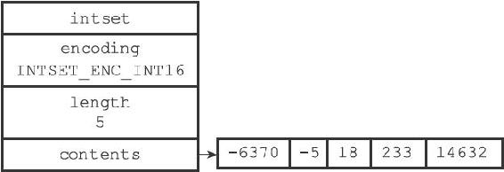
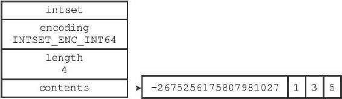

6.1 整数集合的实现
整数集合（intset）是Redis用于保存整数值的集合抽象数据结构，它可以保存类型为int16_t、int32_t或者int64_t的整数值，并且保证集合中不会出现重复元素。
每个intset.h/intset结构表示一个整数集合：
typedef struct intset {
//
编码方式
uint32_t encoding;
//
集合包含的元素数量
uint32_t length;
//
保存元素的数组
int8_t contents[];
} intset;
contents数组是整数集合的底层实现：整数集合的每个元素都是contents数组的一个数组项（item），各个项在数组中按值的大小从小到大有序地排列，并且数组中不包含任何重复项。
length属性记录了整数集合包含的元素数量，也即是contents数组的长度。
虽然intset结构将contents属性声明为int8_t类型的数组，但实际上contents数组并不保存任何int8_t类型的值，contents数组的真正类型取决于encoding属性的值：
·如果encoding属性的值为INTSET_ENC_INT16，那么contents就是一个int16_t类型的数组，数组里的每个项都是一个int16_t类型的整数值（最小值为-32768，最大值为32767）。
·如果encoding属性的值为INTSET_ENC_INT32，那么contents就是一个int32_t类型的数组，数组里的每个项都是一个int32_t类型的整数值（最小值为-2147483648，最大值为2147483647）。
·如果encoding属性的值为INTSET_ENC_INT64，那么contents就是一个int64_t类型的数组，数组里的每个项都是一个int64_t类型的整数值（最小值为-9223372036854775808，最大值为9223372036854775807）。
图6-1展示了一个整数集合示例：

图6-1 一个包含五个int16_t类型整数值的整数集合
·encoding属性的值为INTSET_ENC_INT16，表示整数集合的底层实现为int16_t类型的数组，而集合保存的都是int16_t类型的整数值。
·length属性的值为5，表示整数集合包含五个元素。
·contents数组按从小到大的顺序保存着集合中的五个元素。
·因为每个集合元素都是int16_t类型的整数值，所以contents数组的大小等于sizeof（int16_t）*5=16*5=80位。
图6-2展示了另一个整数集合示例：

图6-2 一个包含四个int16_t类型整数值的整数集合
·encoding属性的值为INTSET_ENC_INT64，表示整数集合的底层实现为int64_t类型的数组，而数组中保存的都是int64_t类型的整数值。
·length属性的值为4，表示整数集合包含四个元素。
·contents数组按从小到大的顺序保存着集合中的四个元素。
·因为每个集合元素都是int64_t类型的整数值，所以contents数组的大小为sizeof（int64_t）*4=64*4=256位。
虽然contents数组保存的四个整数值中，只有-2675256175807981027是真正需要用int64_t类型来保存的，而其他的1、3、5三个值都可以用int16_t类型来保存，不过根据整数集合的升级规则，当向一个底层为int16_t数组的整数集合添加一个int64_t类型的整数值时，整数集合已有的所有元素都会被转换成int64_t类型，所以contents数组保存的四个整数值都是int64_t类型的，不仅仅是-2675256175807981027。
接下来的一节将对整数集合的升级操作进行详细介绍。